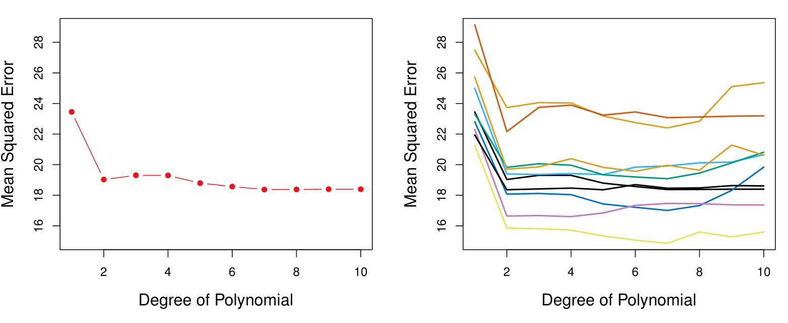
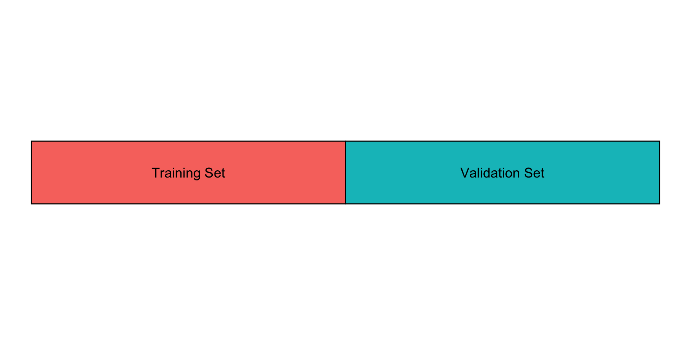
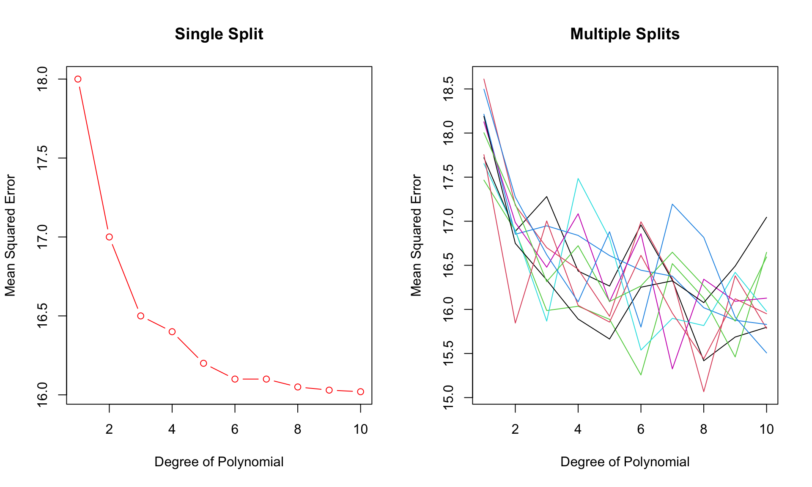
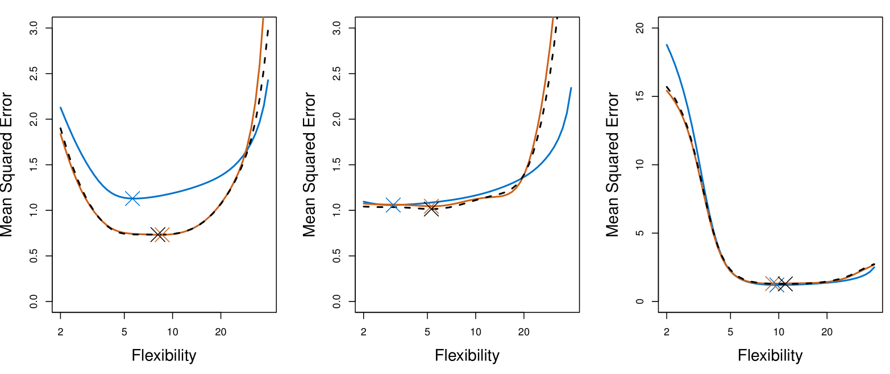
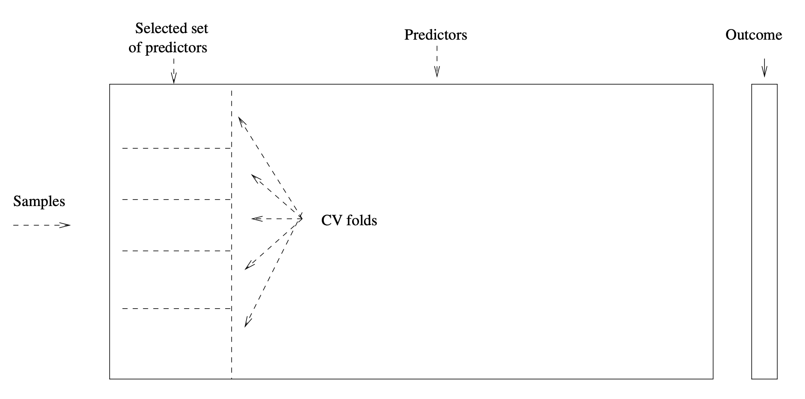
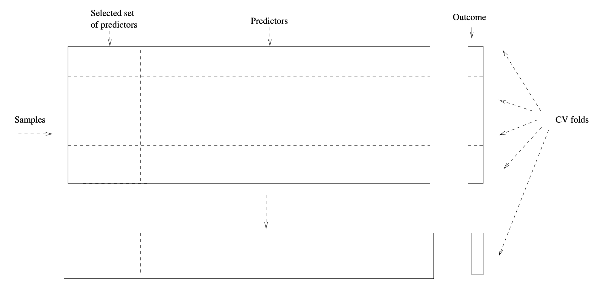
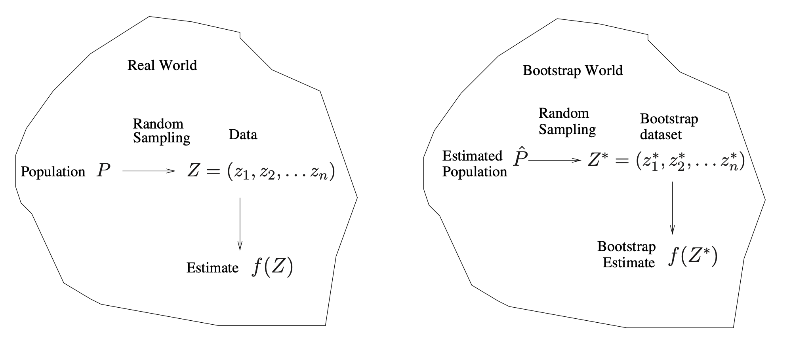
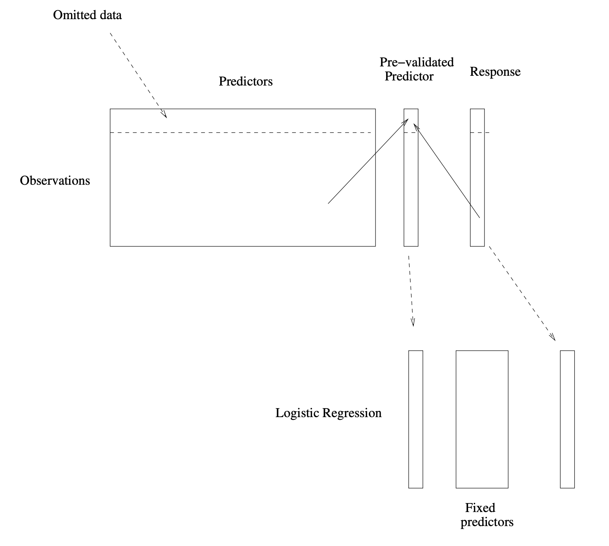

MGMT 47400: Predictive Analytics
Resampling Methods
Professor: Davi Moreira
Overview
- XXXX
- XXX
XXX
XXXX
Cross-validation and the Bootstrap
- In this section we discuss two resampling methods: cross-validation and the bootstrap.
- These methods refit a model of interest to samples formed from the training set, in order to obtain additional information about the fitted model.
- For example, they provide estimates of test-set prediction error, and the standard deviation and bias of our parameter estimates.
Training Error versus Test Error
- Recall the distinction between the test error and the training error:
- The test error is the average error that results from using a statistical learning method to predict the response on a new observation, one that was not used in training the method.
- In contrast, the training error can be easily calculated by applying the statistical learning method to the observations used in its training.
- But the training error rate often is quite different from the test error rate, and in particular, the former can dramatically underestimate the latter.
Training- versus Test-Set Performance

More on Prediction-Error Estimates
- Best solution: a large designated test set. Often not available.
- Some methods make a mathematical adjustment to the training error rate in order to estimate the test error rate. These include the Cp statistic, AIC, and BIC. They are discussed elsewhere in this course.
- Here we instead consider a class of methods that estimate the test error by holding out a subset of the training observations from the fitting process, and then applying the statistical learning method to those held-out observations.
Validation-Set Approach
- Here we randomly divide the available set of samples into two parts: a training set and a validation or hold-out set.
- The model is fit on the training set, and the fitted model is used to predict the responses for the observations in the validation set.
- The resulting validation-set error provides an estimate of the test error. This is typically assessed using MSE in the case of a quantitative response and misclassification rate in the case of a qualitative (discrete) response.
The Validation Process

The Validation Process
A random splitting into two halves:
Left part is the training set, and the right part is the validation set.
Example: Automobile Data
- Want to compare linear vs higher-order polynomial terms in a linear regression.
- We randomly split the 392 observations into two sets:
- A training set containing 196 of the data points.
- A validation set containing the remaining 196 observations.

Left panel shows single split; right panel shows multiple splits.
Drawbacks of Validation Set Approach
The validation estimate of the test error can be highly variable, depending on precisely which observations are included in the training set and which observations are included in the validation set.
In the validation approach, only a subset of the observations — those that are included in the training set rather than in the validation set — are used to fit the model.
This suggests that the validation set error may tend to overestimate the test error for the model fit on the entire data set. Why?
K-Fold Cross-Validation
Widely used approach for estimating test error.
Estimates can be used to select the best model and to give an idea of the test error of the final chosen model.
The idea is to randomly divide the data into \(K\) equal-sized parts. We leave out part \(k\), fit the model to the other \(K-1\) parts (combined), and then obtain predictions for the left-out \(k\)-th part.
This is done in turn for each part \(k = 1, 2, \ldots, K\), and then the results are combined.
K-Fold Cross-Validation in Detail
- Divide data into \(K\) roughly equal-sized parts (\(K = 5\) here).
The Details
- Let the \(K\) parts be \(C_1, C_2, \ldots, C_K\), where \(C_k\) denotes the indices of the observations in part \(k\). There are \(n_k\) observations in part \(k\): if \(N\) is a multiple of \(K\), then \(n_k = n / K\).
- Compute:
\[ \text{CV}_{(K)} = \sum_{k=1}^{K} \frac{n_k}{n} \text{MSE}_k \]
where \(\text{MSE}_k = \frac{\sum_{i \in C_k} (y_i - \hat{y}_i)^2}{n_k}\), and \(\hat{y}_i\) is the fit for observation \(i\), obtained from the data with part \(k\) removed.
- Setting \(K = n\) yields \(n\)-fold or leave-one-out cross-validation (LOOCV).
A Nice Special Case!
- With least-squares linear or polynomial regression, an amazing shortcut makes the cost of LOOCV the same as that of a single model fit! The following formula holds:
\[ \text{CV}_{(n)} = \frac{1}{n} \sum_{i=1}^{n} \left( \frac{y_i - \hat{y}_i}{1 - h_i} \right)^2, \]
where \(\hat{y}_i\) is the \(i\)-th fitted value from the original least-squares fit, and \(h_i\) is the leverage (diagonal of the “hat” matrix; see book for details). This is like the ordinary MSE, except the \(i\)-th residual is divided by \(1 - h_i\).
LOOCV is sometimes useful, but typically doesn’t shake up the data enough. The estimates from each fold are highly correlated, and hence their average can have high variance.
A better choice is \(K = 5\) or \(10\).
Auto Data Revisited

True and Estimated Test MSE for the Simulated Data
Other Issues with Cross-Validation
Since each training set is only \(\frac{K - 1}{K}\) as big as the original training set, the estimates of prediction error will typically be biased upward. Why?
This bias is minimized when \(K = n\) (LOOCV), but this estimate has high variance, as noted earlier.
\(K = 5\) or \(10\) provides a good compromise for this bias-variance tradeoff.
Cross-Validation for Classification Problems
We divide the data into \(K\) roughly equal-sized parts \(C_1, C_2, \ldots, C_K\). \(C_k\) denotes the indices of the observations in part \(k\). There are \(n_k\) observations in part \(k\): if \(n\) is a multiple of \(K\), then \(n_k = n / K\).
Compute:
\[ \text{CV}_K = \sum_{k=1}^{K} \frac{n_k}{n} \text{Err}_k \]
where \(\text{Err}_k = \frac{\sum_{i \in C_k} I(y_i \neq \hat{y}_i)}{n_k}\).
- The estimated standard deviation of \(\text{CV}_K\) is:
\[ \widehat{\text{SE}}(\text{CV}_K) = \sqrt{\frac{1}{K} \sum_{k=1}^{K} \frac{(\text{Err}_k - \overline{\text{Err}_k})^2}{K - 1}} \]
- This is a useful estimate, but strictly speaking, not quite valid. Why not?
Cross-Validation: Right and Wrong
Consider a simple classifier applied to some two-class data:
Starting with 5000 predictors and 50 samples, find the 100 predictors having the largest correlation with the class labels.
We then apply a classifier such as logistic regression, using only these 100 predictors.
How do we estimate the test set performance of this classifier?
Can we apply cross-validation in step 2, forgetting about step 1?
NO!
This would ignore the fact that in Step 1, the procedure has already seen the labels of the training data, and made use of them. This is a form of training and must be included in the validation process.
It is easy to simulate realistic data with the class labels independent of the outcome, so that true test error = 50%, but the CV error estimate that ignores Step 1 is zero! Try to do this yourself.
We have seen this error made in many high-profile genomics papers.
The Wrong and Right Way
- Wrong: Apply cross-validation in step 2.
- Right: Apply cross-validation to steps 1 and 2.
Wrong Way
Right Way
The Bootstrap
- The bootstrap is a flexible and powerful statistical tool that can be used to quantify the uncertainty associated with a given estimator or statistical learning method.
- For example, it can provide an estimate of the standard error of a coefficient, or a confidence interval for that coefficient.
Where Does the Name Come From?
The use of the term bootstrap derives from the phrase to pull oneself up by one’s bootstraps, widely thought to be based on one of the eighteenth-century The Surprising Adventures of Baron Munchausen by Rudolph Erich Raspe:
The Baron had fallen to the bottom of a deep lake. Just when it looked like all was lost, he thought to pick himself up by his own bootstraps.
It is not the same as the term bootstrap used in computer science, meaning to “boot” a computer from a set of core instructions, though the derivation is similar.
A Simple Example
Suppose that we wish to invest a fixed sum of money in two financial assets that yield returns of \(X\) and \(Y\), respectively, where \(X\) and \(Y\) are random quantities.
We will invest a fraction \(\alpha\) of our money in \(X\), and will invest the remaining \(1 - \alpha\) in \(Y\).
We wish to choose \(\alpha\) to minimize the total risk, or variance, of our investment. In other words, we want to minimize:
\[ \text{Var}(\alpha X + (1 - \alpha) Y). \]
- One can show that the value that minimizes the risk is given by:
\[ \alpha = \frac{\sigma_Y^2 - \sigma_{XY}}{\sigma_X^2 + \sigma_Y^2 - 2\sigma_{XY}}, \] where \(\sigma_X^2 = \text{Var}(X)\), \(\sigma_Y^2 = \text{Var}(Y)\), and \(\sigma_{XY} = \text{Cov}(X, Y)\).
Example Continued
But the values of \(\sigma_X^2\), \(\sigma_Y^2\), and \(\sigma_{XY}\) are unknown.
We can compute estimates for these quantities, \(\hat{\sigma}_X^2\), \(\hat{\sigma}_Y^2\), and \(\hat{\sigma}_{XY}\), using a data set that contains measurements for \(X\) and \(Y\).
We can then estimate the value of \(\alpha\) that minimizes the variance of our investment using:
\[ \hat{\alpha} = \frac{\hat{\sigma}_Y^2 - \hat{\sigma}_{XY}}{\hat{\sigma}_X^2 + \hat{\sigma}_Y^2 - 2\hat{\sigma}_{XY}}. \]
Example Continued

Each panel displays 100 simulated returns for investments X and Y. From left to right and top to bottom, the resulting estimates for \(\alpha\) are 0.576, 0.532, 0.657, and 0.651.
Example Continued
To estimate the standard deviation of \(\hat{\alpha}\), we repeated the process of simulating 100 paired observations of \(X\) and \(Y\), and estimating \(\alpha\) 1,000 times.
We thereby obtained 1,000 estimates for \(\alpha\), which we can call \(\hat{\alpha}_1, \hat{\alpha}_2, \ldots, \hat{\alpha}_{1000}\).
The left-hand panel of the Figure on slide 29 displays a histogram of the resulting estimates.
For these simulations, the parameters were set to:
\[ \sigma_X^2 = 1, \, \sigma_Y^2 = 1.25, \, \sigma_{XY} = 0.5, \] and so we know that the true value of \(\alpha\) is 0.6 (indicated by the red line).
Example Continued
- The mean over all 1,000 estimates for \(\alpha\) is:
\[ \bar{\alpha} = \frac{1}{1000} \sum_{r=1}^{1000} \hat{\alpha}_r = 0.5996, \]
very close to \(\alpha = 0.6\), and the standard deviation of the estimates is:
\[ \sqrt{\frac{1}{1000 - 1} \sum_{r=1}^{1000} (\hat{\alpha}_r - \bar{\alpha})^2} = 0.083. \]
This gives us a very good idea of the accuracy of \(\hat{\alpha}\): \(\text{SE}(\hat{\alpha}) \approx 0.083\).
So roughly speaking, for a random sample from the population, we would expect \(\hat{\alpha}\) to differ from \(\alpha\) by approximately 0.08, on average.
Results
Left: A histogram of the estimates of \(\alpha\) obtained by generating 1,000 simulated data sets from the true population.
Center: A histogram of the estimates of \(\alpha\) obtained from 1,000 bootstrap samples from a single data set.
Right: The estimates of \(\alpha\) displayed in the left and center panels are shown as boxplots. In each panel, the pink line indicates the true value of \(\alpha\).
Now Back to the Real World
The procedure outlined above cannot be applied, because for real data we cannot generate new samples from the original population.
However, the bootstrap approach allows us to use a computer to mimic the process of obtaining new data sets, so that we can estimate the variability of our estimate without generating additional samples.
Rather than repeatedly obtaining independent data sets from the population, we instead obtain distinct data sets by repeatedly sampling observations from the original data set with replacement.
Each of these “bootstrap data sets” is created by sampling with replacement, and is the same size as our original dataset. As a result, some observations may appear more than once in a given bootstrap data set and some not at all.
Example with Just 3 Observations

| Obs | X | Y |
|---|---|---|
| 1 | 4.3 | 2.4 |
| 2 | 2.1 | 1.1 |
| 3 | 5.3 | 2.8 |
Original Data (\(Z\))
\[ Z^{*1} \quad \text{Bootstrap Data 1:} \quad \begin{array}{|c|c|c|} \hline \text{Obs} & X & Y \\ \hline 3 & 5.3 & 2.8 \\ 1 & 4.3 & 2.4 \\ 3 & 5.3 & 2.8 \\ \hline \end{array} \]
\[ Z^{*2} \quad \text{Bootstrap Data 2:} \quad \begin{array}{|c|c|c|} \hline \text{Obs} & X & Y \\ \hline 2 & 2.1 & 1.1 \\ 3 & 5.3 & 2.8 \\ 1 & 4.3 & 2.4 \\ \hline \end{array} \]
\[ Z^{*B} \quad \text{Bootstrap Data $B$:} \quad \begin{array}{|c|c|c|} \hline \text{Obs} & X & Y \\ \hline 2 & 2.1 & 1.1 \\ 2 & 2.1 & 1.1 \\ 1 & 4.3 & 2.4 \\ \hline \end{array} \]
- A graphical illustration of the bootstrap approach on a small sample containing \(n = 3\) observations.
- Each bootstrap data set contains \(n\) observations, sampled with replacement from the original data set.
- Each bootstrap data set is used to obtain an estimate of \(\alpha\).
Bootstrap Standard Error
Denoting the first bootstrap data set by \(Z^{*1}\), we use \(Z^{*1}\) to produce a new bootstrap estimate for \(\alpha\), which we call \(\hat{\alpha}^{*1}\).
This procedure is repeated \(B\) times for some large value of \(B\) (say 100 or 1000), in order to produce \(B\) different bootstrap data sets, \(Z^{*1}, Z^{*2}, \ldots, Z^{*B}\), and \(B\) corresponding \(\alpha\) estimates, \(\hat{\alpha}^{*1}, \hat{\alpha}^{*2}, \ldots, \hat{\alpha}^{*B}\).
We estimate the standard error of these bootstrap estimates using the formula:
\[ SE_B(\hat{\alpha}) = \sqrt{\frac{1}{B - 1} \sum_{r=1}^B (\hat{\alpha}^{*r} - \bar{\alpha}^{*})^2}. \]
This serves as an estimate of the standard error of \(\hat{\alpha}\) estimated from the original data set. See center and right panels of Figure on slide 29. Bootstrap results are in blue.
For this example \(SE_B(\hat{\alpha}) = 0.087\).
A General Picture for the Bootstrap
Real World - Population: \(P\) - Random Sampling → Data: \(Z = (z_1, z_2, \ldots, z_n)\) - Estimate: \(f(Z)\)
Bootstrap World - Estimated Population: \(\hat{P}\) - Random Sampling → Bootstrap Dataset: \(Z^* = (z^*_1, z^*_2, \ldots, z^*_n)\) - Bootstrap Estimate: \(f(Z^*)\)
The Bootstrap in General
In more complex data situations, figuring out the appropriate way to generate bootstrap samples can require some thought.
For example, if the data is a time series, we can’t simply sample the observations with replacement (why not?).
We can instead create blocks of consecutive observations and sample those with replacements. Then we paste together sampled blocks to obtain a bootstrap dataset.
Other Uses of the Bootstrap
Primarily used to obtain standard errors of an estimate.
Also provides approximate confidence intervals for a population parameter. For example, looking at the histogram in the middle panel of the figure on slide 29, the 5% and 95% quantiles of the 1,000 values is (0.43, 0.72).
This represents an approximate 90% confidence interval for the true α. How do we interpret this confidence interval?
The above interval is called a Bootstrap Percentile confidence interval. It is the simplest method (among many approaches) for obtaining a confidence interval from the bootstrap.
Can the Bootstrap Estimate Prediction Error?
In cross-validation, each of the \(K\) validation folds is distinct from the other \(K-1\) folds used for training: there is no overlap. This is crucial for its success. Why?
To estimate prediction error using the bootstrap, we could think about using each bootstrap dataset as our training sample, and the original sample as our validation sample.
But each bootstrap sample has significant overlap with the original data. About two-thirds of the original data points appear in each bootstrap sample. Can you prove this?
This will cause the bootstrap to seriously underestimate the true prediction error. Why?
The other way around— with the original sample as the training sample, and the bootstrap dataset as the validation sample— is worse!
Removing the Overlap
Can partly fix this problem by only using predictions for those observations that did not (by chance) occur in the current bootstrap sample.
But the method gets complicated, and in the end, cross-validation provides a simpler, more attractive approach for estimating prediction error.
Pre-validation
In microarray and other genomic studies, an important problem is to compare a predictor of disease outcome derived from a large number of “biomarkers” to standard clinical predictors.
Comparing them on the same dataset that was used to derive the biomarker predictor can lead to results strongly biased in favor of the biomarker predictor.
Pre-validation can be used to make a fairer comparison between the two sets of predictors.
Motivating Example
An example of this problem arose in the paper of van’t Veer et al. Nature (2002). Their microarray data has 4918 genes measured over 78 cases, taken from a study of breast cancer. There are 44 cases in the good prognosis group and 34 in the poor prognosis group. A “microarray” predictor was constructed as follows:
70 genes were selected, having the largest absolute correlation with the 78 class labels.
Using these 70 genes, a nearest-centroid classifier \(C(x)\) was constructed.
Applying the classifier to the 78 microarrays gave a dichotomous predictor \(z_i = C(x_i)\) for each case \(i\).
Results
Comparison of the microarray predictor with some clinical predictors, using logistic regression with outcome prognosis:
| Model | Coef | Stand. Err. | Z score | p-value |
|---|---|---|---|---|
| Re-use | ||||
| microarray | 4.096 | 1.092 | 3.753 | 0.000 |
| angio | 1.208 | 0.816 | 1.482 | 0.069 |
| er | -0.554 | 1.044 | -0.530 | 0.298 |
| grade | -0.697 | 1.003 | -0.695 | 0.243 |
| pr | 1.214 | 1.057 | 1.149 | 0.125 |
| age | -1.593 | 0.911 | -1.748 | 0.040 |
| size | 1.483 | 0.732 | 2.026 | 0.021 |
| Model | Coef | Stand. Err. | Z score | p-value |
|---|---|---|---|---|
| Pre-validated | ||||
| microarray | 1.549 | 0.675 | 2.296 | 0.011 |
| angio | 1.589 | 0.682 | 2.329 | 0.010 |
| er | -0.617 | 0.894 | -0.690 | 0.245 |
| grade | 0.719 | 0.720 | 0.999 | 0.159 |
| pr | 0.537 | 0.863 | 0.622 | 0.267 |
| age | -1.471 | 0.701 | -2.099 | 0.018 |
| size | 0.998 | 0.594 | 1.681 | 0.046 |
Idea behind Pre-validation
Designed for comparison of adaptively derived predictors to fixed, pre-defined predictors.
The idea is to form a “pre-validated” version of the adaptive predictor: specifically, a “fairer” version that hasn’t “seen” the response \(y\).
Pre-validation Process
flowchart LR
Observations -->|Predictors| A[Omitted data]
A -->|Pre-validated Predictor| B[Response]
B -->|Logistic Regression| C[Fixed predictors]
- Observations are used to create predictors, with some data omitted.
- Pre-validated predictors are derived without access to the response.
- Logistic regression is applied to pre-validated predictors and fixed predictors.
Pre-validation in Detail for This Example
Divide the cases up into \(K = 13\) equal-sized parts of 6 cases each.
Set aside one of the parts. Using only the data from the other 12 parts:
- Select the features having an absolute correlation of at least 0.3 with the class labels.
- Form a nearest centroid classification rule.
Use the rule to predict the class labels for the 13th part.
Repeat steps 2 and 3 for each of the 13 parts, yielding a “pre-validated” microarray predictor \(\tilde{z}_i\) for each of the 78 cases.
Fit a logistic regression model to the pre-validated microarray predictor and the 6 clinical predictors.
The Bootstrap versus Permutation Tests
- Bootstrap:
- Samples from the estimated population and uses the results to estimate standard errors and confidence intervals.
- Permutation Methods:
- Sample from an estimated null distribution for the data.
- Used to estimate p-values and False Discovery Rates for hypothesis tests.
- Bootstrap for Null Hypothesis Testing:
- Can test a null hypothesis in simple situations.
- Example: If \(\theta = 0\) is the null hypothesis, check whether the confidence interval for \(\theta\) contains zero.
- Adapting Bootstrap for Null Distribution:
- Can adapt bootstrap to sample from a null distribution.
- See Efron and Tibshirani, An Introduction to the Bootstrap (1993), Chapter 16.
- However, there is no real advantage over permutation tests.
Summary
Summary
- XXXX
- XXXX
Thank you!
Predictive Analytics